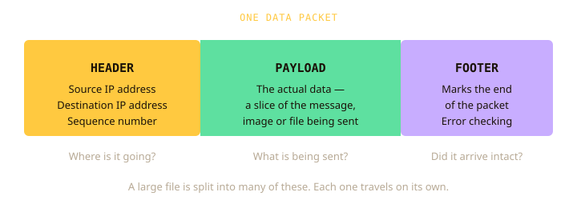

You type an address. Something arrives.
In class you separated the internet from the web. This homework is about the part in between: what actually travels, how it's addressed, and how a name like example.com becomes something a machine can route to.
The whole page takes about 45 minutes, including a short check on Canvas at the end. Your progress saves as you go, so you can stop and come back.
By the end of this page you can…
- Name the three parts of a packet and what each is for
- Say why 4.3 billion addresses turned out not to be enough
- Convert an octet between decimal and binary
- Put the ten DNS steps in order without the notes open
- Explain what is different for the next person to look up a site
Nothing travels in one piece
Before the exercises, here is what actually happens when you ask for a page — and why the answer is stranger than it looks.
Press play — or switch to reading — and the diagram will follow along.
Listen or read — same words either way. You can stop and replay any part.
🔒 Work through the explanation above first — this unlocks at the end.
Now test it
A router in the middle of the network fails while a page is being sent as packets. What happens?
The one-line version
Data is split into numbered, independently routed packets and reassembled at the destination.
Why that helps
There is no single path to break. A failed router is routed around; out-of-order arrival is normal and fixed by sequence numbers.
Your guess at the start
What actually happens: it arrives in pieces, as packets. If you guessed one stream, that's the usual instinct, and the section above is why it's wrong.
What’s actually inside one
Three parts, each there for a reason. The third one explains something most people get wrong about reliability.
Press play — or switch to reading — and the diagram will follow along.
Listen or read — same words either way. You can stop and replay any part.
🔒 Work through the explanation above first — this unlocks at the end.

Which part carries the destination?
Packet 3 never arrives
Five packets sent, four arrive. Without looking back up: how does the receiver know one is missing, and what does it do?
The sequence numbers give it away — the receiver has 1, 2, 4 and 5, so the gap tells it 3 is missing without anyone reporting it.
Packet 3 is sent again, and only packet 3. The other four stay put.
The three parts
Header — source and destination IP, plus the sequence number. Payload — the actual data. Footer (also called the trailer) — end marker and error checking.
The bit that gets misremembered
Reliability is not packets never failing — they are lost routinely. It is the receiver being able to detect a gap and have only the missing piece sent again.
Who does what
The numbering and the resending are the job of a protocol called TCP, which works alongside IP. IP only does the addressing. You will meet TCP/IP together in the protocols homework (H3).
Every device needs an address
Where the four numbers come from, why they stop at 255, and why the internet ran out of them.
Press play — or switch to reading — and the diagram will follow along.
Listen or read — same words either way. You can stop and replay any part.
🔒 Work through the explanation above first — this unlocks at the end.
The worked example from the explanation, to refer back to: 192 — take 128, then 64, and nothing is left.
| 128 | 64 | 32 | 16 | 8 | 4 | 2 | 1 |
|---|---|---|---|---|---|---|---|
| 1 | 1 | 0 | 0 | 0 | 0 | 0 | 0 |
So 192 in binary is 11000000.
Your turn, with help. Fill in the table for 168 — put a 1 or a 0 in each column. Stuck? Reveal the method one column at a time.
| 128 | 64 | 32 | 16 | 8 | 4 | 2 | 1 |
|---|---|---|---|---|---|---|---|
- 128: does 128 fit into 168? Yes, so that column is 1. 168 − 128 = 40 left.
- 64: does 64 fit into 40? No, so 0. Still 40 left.
- 32: does 32 fit into 40? Yes, so 1. 40 − 32 = 8 left.
- 16: does 16 fit into 8? No, so 0.
- 8: does 8 fit into 8? Yes, so 1. Nothing is left.
- 4, 2 and 1: nothing is left, so all three are 0.
On your own, the other way. What decimal number is the octet 01100100? Add the place values of every column with a 1.
| 128 | 64 | 32 | 16 | 8 | 4 | 2 | 1 |
|---|---|---|---|---|---|---|---|
| 0 | 1 | 1 | 0 | 0 | 1 | 0 | 0 |
Valid or not?
Click each address to sort it. Apply the rule from the explanation.
The shape
Four octets, each 0–255, each 8 bits — 32 bits in total, written in dotted decimal. An address is valid only when it has exactly four numbers and every one is between 0 and 255.
Why 255
All eight bits set: 128+64+32+16+8+4+2+1 = 255. It is arithmetic, not a rule someone chose — which is why an octet of 256 is invalid.
Why IPv6
32 bits gives ~4.3 billion addresses. Phones, watches, TVs and doorbells exhausted that. IPv6 uses 128 bits.
Nobody types 142.250.70.206
A name goes in and an address comes out — but not in one step, and the reason why is worth understanding.
Press play — or switch to reading — and the diagram will follow along.
Listen or read — same words either way. You can stop and replay any part.
🔒 Work through the explanation above first — this unlocks at the end.
Put the lookup back in order
From memory now. Drag a row by its ⠿ handle to move it. If dragging is awkward, the ↑ and ↓ buttons do the same job.
Now visit the same site again
Steps 4 to 8 are skipped. Both of you use the same resolver. It cached the answer at step 8 when you looked the name up, so at step 3 it finds the answer and hands it straight back to your classmate’s browser. The root, TLD and authoritative servers are never contacted, nothing comes back from them, and there is nothing new to cache. Steps 9 and 10 (the browser's request and the page loading) still happen as normal.
Which job belongs to DNS?
The one-line version
DNS takes a domain name and returns an IP address. It is distributed — no single machine holds every name — so a lookup walks a hierarchy: resolver, root, TLD, authoritative.
The ten steps, in order
The shaded steps (4 to 8) are the ones skipped when the resolver already has the answer cached.
Why the second visit is faster
The resolver caches the answer, skipping root, TLD and authoritative next time. Same reason a site that moves servers takes hours to reach everyone.
The confusion that costs marks
DNS does one thing: name in, address out. Three jobs that are not DNS:
DHCPgives your device an address when it joins a networkHTTPfetches the actual page once you have the addressTLSencrypts what travels, so it can’t be read if interceptedYour summary
When you have attempted every question on this page, you can download a summary to keep: your answers, the correct answer underneath any you got wrong, and a recap of what each section covered. It is useful to revise from, and to bring to class.
Questions attempted: 0 of 0
The download is a web page (.html) that opens in any browser. For a PDF, open it, choose Print, then Save as PDF.
Words from this page
| Packet | A small, numbered piece of a larger message, sent on its own across the network. S1 |
| Router | A device that passes each packet one step closer to its destination. S1 |
| Sequence number | The number in a packet's header that says where it belongs in the message, so the pieces can be put back in order. S1–S2 |
| Header, payload, footer | The three parts of a packet: addressing and sequence number; the actual data; and the end marker with error checking (the footer is also called the trailer). S2 |
| IP address | The unique address of a device on a network, used to route packets to it. S3 |
| IPv4 | The version of IP that uses 32-bit addresses, written as four numbers from 0 to 255. S3 |
| Octet | One of the four 8-bit numbers in an IPv4 address. S3 |
| IPv6 | The newer version of IP, using 128-bit addresses because IPv4 ran out. S3 |
| DNS (Domain Name System) | The system that turns a domain name, such as example.com, into an IP address. S4 |
| Resolver | The server, usually run by your internet provider, that looks up a domain name on your behalf. S4 |
| Cache | A store of recent answers, kept so a repeat request can be answered straight away. S4 |
| Root, TLD and authoritative servers | The three levels of the DNS hierarchy: who handles each ending such as .com; who is authoritative for each name; and the server holding the real, current record. S4 |
| DHCP, HTTP, TLS | Three jobs that are not DNS: giving a device its address, fetching the page, and encrypting what travels. S4 |
Check yourself on Canvas
Open the H1 check quiz on Canvas and do it closed book, with this page closed. If you can't answer without the notes, you don't have it yet, and it's much better to find that out now than in the exam. It also shows your teacher you've done this homework.
Something you couldn’t answer? That is useful, not a failure. Say so in the last question of the Canvas quiz (“one thing I am still unsure about”) and it will be covered in class.
Coming up in class
ping and tracert on your own laptop and watch a real route to a server. It should look like the diagram in Section 1.